library(ggplot2)
library(dplyr)
library(tidyr)
library(scales)Trabalho Final
Estatística e Probabilidade
Introdução
Este trabalho foi elaborado para a disciplina de Estatística e Probabilidade, sob orientação do Prof. Dr. Cleverson Pinheiro, como parte curso de Análise e Desenvolvimento de Sistemas do Instituto Federal de São Paulo, Campus Jacareí. Ele foi desenvolvido utilizando a linguagem de programação R, a ferramenta de publicação Quarto e o conjunto de pacotes tidyverse.
O código fonte correspondente a este documento está também disponível no GitHub, no repositório jultty/ESPR-final. Ele pode ser visualizado em sua versão como página web em jultty.github.io/ESPR-final.
- Softwares utilizados e versões:
- R 4.2.2, de 10 de novembro de 2022
- Quarto 1.7.32, de 16 de junho de 2025
- tidyverse 2.0.0, de 22 de fevereiro de 2023, com atualizações de pacotes individuais
Os pacotes utilizados podem ser visualizadas na relação abaixo, onde são de fato carregados no ambiente de desenvolvimento.
Blocos de código como o exibido acima são utilizados ao longo deste documento. Em algumas ocasiões, eles estão ocultos por terem menor importância para a demonstração da solução – por exemplo, código relacionado estritamente à plotagem de gráficos e não à definição de um cálculo ou algoritmo que de fato informa o gráfico.
Nestes casos, o texto “⯈ Código” aparece onde o código está oculto e apenas seu resultado é exibido, seja ele um número, texto, conjunto de dados ou gráfico. Clicando sobre este texto, é possível expandir e visualizar o código na íntegra:
Código
exp(1i * pi) + 1[1] 0+1.224647e-16iObservações
Para manter a consistência com as saídas computacionais, neste trabalho utilizou-se exclusivamente o ponto como marcador de casas decimais.
Funções Auxiliares
Primeiro, podemos definir algumas funções auxiliares que serão úteis ao longo de todo o trabalho.
## Usando notação Latex, mostra um número com seis casas decimais e
## a porcentagem equivalente com duas casas decimais
ppercent <- function(raw) {
sprintf("$$P = %.6f \\approx %.2f\\%%$$", raw, raw * 100) |> cat()
}
## Arredonda um número para 4 casas decimais
r4 <- function(float) {
round(float, digits = 4)
}
## Arredonda um número para 2 casas decimais
r2 <- function(float) {
round(float, digits = 2)
}Exercício 1
Dada a oportunidade na questão elementar do primeiro exercício, podemos representar as curvas \(A\), \(B\) e \(C\) usando valores aproximados ao que vemos no gráfico, demonstrando a estabelecendo alguns padrões que se repetirão ao longo deste trabalho.
Para isso, criaremos uma tibble, uma estrutura de dados similar a um dataframe, que armazena dados em formato tabular. Desta forma podemos relacionar cada curva à sua média e desvio padrão.
curves <- tibble(
curve = c("A", "B", "C"), # Curva
mu = c(45, 60, 45), # Média
sigma = c(2, 3.5, 5), # Desvio padrão
)Iremos construir também um vetor x_vector para os valores de \(x\) contendo 1000 valores entre 0 e 100.
x_vector <- seq(0, 100, length.out = 1000)Neste momento, temos as informações necessárias para obter os valores correspondentes no eixo \(y\).
Criaremos uma segunda tibble, density, que terá 3000 linhas, mil para cada curva, com respectivos \(x\) e \(y\). Embora mais didático pelo menor nível de abstração, esta implementação não seria seria preferível em larga escala, onde o pacote purrr oferece resultados mais eficientes.
density <- curves |>
# Para estruturar o dataset, repetimos os atributos de cada curva 1000 vezes
slice(rep(seq_len(n()), each = length(x_vector))) |>
# Adicionamos uma nova coluna, que insere os valores de x para cada linha
mutate(x = rep(x_vector, times = nrow(curves))) |>
# Finalmente, obtemos o y correspondente na FDP em outra nova coluna
mutate(y = dnorm(x, mean = mu, sd = sigma)) |>
# Precisamos apenas das colunas curve (A, B ou C), x e y
select(curve, x, y)O resultado do que estabelecemos acima pode ser observado na plotagem dos dados:
Código
## Define as posições dos rótulos sobre cada curva
## A partir do ponto máximo de cada curva, calculamos uma posição um pouco mais
## à esquerda e abaixo para posicionar os rótulos
label_positions <- curves |>
transmute(curve,
x = mu - 7,
y = dnorm(mu, mean = mu, sd = sigma) - 0.01
)
## Plota os dados
plot <- ggplot(density, aes(x, y, color = curve)) +
geom_line(linewidth = 1, show.legend = FALSE) +
geom_text(
data = label_positions, aes(x = x, y = y, label = curve),
size = 6,
show.legend = FALSE,
) +
labs(
title = "Esboço das Curvas Normais A, B e C",
x = "", y = "",
) +
scale_x_continuous(
breaks = seq(0, 100, by = 10),
minor_breaks = seq(0, 100, by = 5)
) +
theme_minimal(base_size = 13) +
theme(
plot.title = element_text(margin = margin(l = -25, t = 10, b = 15))
)
plotMunidos do gráfico, podemos responder às perguntas do enunciado:
Questão A
A média maior é a da curva \(B\), pois ela está mais deslocada à direita. Sua média fica sobre o ponto \(60\) do eixo \(x\).
Código
bisectors <- curves |>
transmute(curve, xintercept = mu)
plot +
labs(
title = "Esboço das Curvas Normais A, B e C com linhas de simetria",
) +
geom_vline(
data = bisectors,
aes(xintercept = xintercept),
color = "#66666666",
linetype = "dashed",
linewidth = 0.6,
show.legend = FALSE
)As linhas de simetria nos ajudam a verificar que a média maior está localizada no ponto 60 do eixo \(x\), a média da curva \(B\). Não há diferença significativa entre os eixos de simetria das curvas \(A\) e \(C\), ambas com aparente média 45, mas visivelmente à esquerda da média de \(B\).
Questão B
O desvio padrão maior é o da curva \(C\), pois seus limites mínimo e máximo atingem um desvio muito mais amplo em relação à média. Isso também indica que o desvio padrão de \(C\) deve ser o maior. Observando o esboço, podemos estimar um desvio padrão em torno de \(5\).
Exercício 2
O exercício 2 nos apresenta um problema similar, que também se debruça sobre a observação de um esboço. Sabendo que a criação de curvas normais será essencial por todo o trabalho, vamos criar um par de funções que nos permita esboçar curvas normais como a que criamos anteriormente através apenas de seus parâmetros:
Código
## Plota o gráfico de uma curva de distribuição normal
plot_draft <- function(density, curve, properties) {
p <- properties
mu <- slice_head(curve)$mu
sigma <- slice_head(curve)$sigma
bisectors <- curve |>
transmute(curve, xintercept = mu)
plot <- ggplot(density, aes(x, y)) +
geom_line(color = "#00af00", linewidth = 1, show.legend = FALSE) +
geom_vline(
data = bisectors,
aes(xintercept = xintercept),
color = "#66666666",
linetype = "dashed",
linewidth = 0.6,
show.legend = FALSE
) +
annotate(
"text",
x = mu,
y = dnorm(mu, mean = mu, sd = sigma) * 0.25,
label = paste0("μ = ", mu),
vjust = 0,
hjust = -0.25,
color = "darkgreen"
) +
labs(
title = paste("Esboço da Curva Normal \"", p$name, "\"", sep = ""),
x = "",
y = ""
) +
scale_x_continuous(
breaks = seq(p$x_min, p$x_max, by = p$x_step),
minor_breaks = seq(p$x_min, p$x_max, by = p$x_step / 2),
labels = label_number(accuracy = 0.1),
) +
scale_y_continuous(
limits = c(0, max(density$y) * p$y_max_multiplier)
) +
theme_minimal(base_size = 13) +
theme(plot.title = element_text(margin = margin(l = -25, t = 10, b = 15)))
plot
}draft <- function(name, mu, sigma, x_min, x_max, x_step, y_max_multiplier = 1) {
curve <- tibble(
curve = name,
mu = mu,
sigma = sigma,
)
x_vector <- seq(x_min, x_max, length.out = 1000)
density <- curve |>
slice(rep(seq_len(n()), each = length(x_vector))) |>
mutate(x = x_vector) |>
mutate(y = dnorm(x, mean = mu, sd = sigma)) |>
select(curve, x, y)
graph_properties <- list(
name = name,
x_min = x_min,
x_max = x_max,
x_step = x_step,
y_max_multiplier = y_max_multiplier
)
plot_draft(density, curve, graph_properties)
}Nossa função pode ser usada da seguinte forma:
draft(
name = "Notas",
mu = 655,
sigma = 25,
x_min = 580,
x_max = 730,
x_step = 20,
y_max_multiplier = 1.8
)Podemos responder, pela observação do gráfico, que a nota média é de 655.
Ainda observando o gráfico, podemos ver aproximadamente os pontos de inflexão em 630 e 680, o que sugere um desvio padrão de \(\sigma = 25\).
Exercício 3
Os exercícios 3 a 6 apresentam problemas relacionados à área sob a curva normal padrão dado um escore-z.
A linguagem R já nos fornece a função pnorm, que responde de forma direta à pergunta sobre qual é a área sob a curva dado um \(z\) qualquer.
Para visualizarmos estas informações, iremos criar uma função z_plot para obter ainda um gráfico representando a área.
Nossa função receberá apenas um valor z e dois parâmetros opcionais:
right, que, se fornecido com o valorTRUE, retornará um gráfico com a aŕea à direita de \(z\). Caso o valor sejaFALSEou não seja fornecido, ela por padrão retornará um gráfico com a área à esquerda de \(z\)opposite, que, se fornecido, representa um segundo valor oposto ao primeiro que delimita o fim da área, ou seja, permite encontrar uma região entre dois valores
Código
z_plot <- function(z, right = FALSE, opposite = NULL) {
opp <- if (is.null(opposite)) if (right) 4 else -4 else opposite
## Cria um conjunto de 400 valores para x entre -4 e 4
x_vals <- seq(-4, 4, length.out = 400)
## Cria uma tibble com os valores de x e seus equivalentes em y
pairs <- tibble(x = x_vals, y = dnorm(x_vals))
plot <- ggplot(
# Traça a curva usando os valores de x e y
pairs, aes(x, y)) +
geom_line(linewidth = 0.5, color = "#0000006f") +
geom_area(
# Obtém apenas a área onde x <= z
data = subset(pairs, if (right) (x >= z & x <= opp) else (x >= opp & x <= z)),
aes(x, y),
# Colore a área obtida em verde
fill = "darkgreen", alpha = 0.4
) +
# Traça uma linha perpendicular a x sobre z
geom_vline(xintercept = z, linetype = "dashed", color = "darkgreen") +
labs(
x = "z",
y = "Densidade de probabilidade"
) +
# Demais parâmetros para a aparência e tamanho do gráfico
theme_minimal(base_size = 13) +
theme(
plot.title = element_text(margin = margin(l = -45, t = 10, b = 25)),
axis.title.y = element_text(
margin = margin(t = 0, r = 15, b = 0, l = 10, unit = "pt")
),
axis.title.x = element_text(
margin = margin(t = 15, r = 0, b = 10, l = 0, unit = "pt")
)
)
plot <- if (!is.null(opposite)) {
plot +
# Adiciona título e rótulos dos eixos
labs(
title = paste("Área entre os escores-z", r4(z), "e", r4(opp)),
) +
geom_vline(
xintercept = opp,
linetype = "dashed",
color = "darkgreen"
) +
annotate(
"text",
x = z, y = dnorm(z) * 0.5,
label = sprintf("%.3f", z),
size = 3,
vjust = -0.4,
hjust = -0.1,
color = "darkgreen"
) +
annotate(
"text",
x = opp, y = dnorm(opp) * 0.5,
label = sprintf("%.3f", opp),
size = 3,
vjust = -0.4,
hjust = -0.1,
color = "darkgreen"
) +
annotate(
"text",
x = 0.5, y = dnorm(0),
label = sprintf(
"P(%.2f ≤ z ≤ %.2f) = %.4f",
if (z < opp) z else opp,
if (z > opp) z else opp,
abs(pnorm(z) - pnorm(opp))
),
size = 3,
vjust = -0.4,
hjust = -0.1,
color = "darkgreen"
)
} else {
plot +
# Adiciona título e rótulos dos eixos
labs(
title = paste("Área acumulada para o escore-z", r4(z)),
) +
# Anota o valor correspondente à área
annotate(
"text",
x = z, y = dnorm(z) * 0.5,
label = sprintf("P(z ≤ %.2f) = %.4f", z, pnorm(z, lower.tail = !right)),
size = 3,
vjust = -0.4,
hjust = -0.1,
color = "darkgreen"
)
}
plot
}Questão A
A função pnorm responde à pergunta sobre a área acumulada sob a curva normal padrão à esquerda de \(-2.19\), que é igual a \(0.01426212\) ou aproximadamente \(1.43\%\).
pnorm(-2.19) |> ppercent()\[P = 0.014262 \approx 1.43\%\]
Podemos também representar esta área visualmente usando a função z_plot que acabamos de definir:
z_plot(-2.19)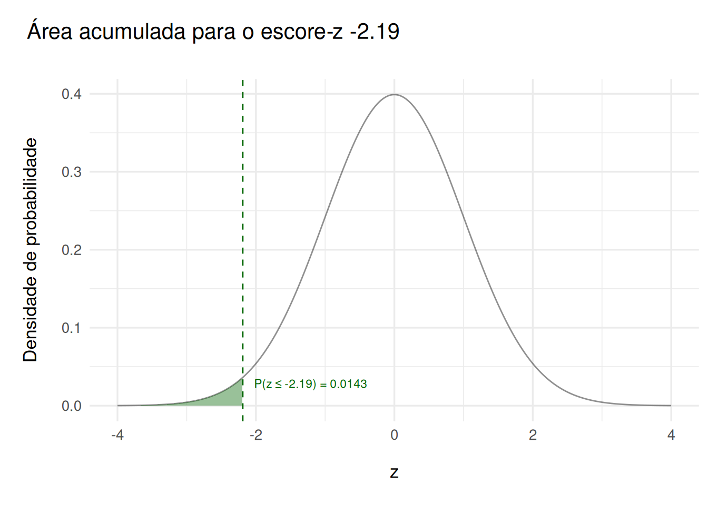
Questão B
Para 2.17, temos:
pnorm(2.17) |> ppercent()\[P = 0.984997 \approx 98.50\%\]
Que pode ser representado como:
z_plot(2.17)Exercício 4
Questão A
z_plot(2.13)Questão B
pnorm(2.13) |> ppercent()\[P = 0.983414 \approx 98.34\%\]
Exercício 5
Questão A
Para encontrar a área à direita de um determinado ponto podemos subtrair o mesmo resultado obtido com pnorm de 1:
1 - pnorm(-2.16)[1] 0.9846137Ou podemos usar a opção lower.tail = FALSE, fornecida pela própria função:
pnorm(-2.16, lower.tail = FALSE) |> ppercent()\[P = 0.984614 \approx 98.46\%\]
A curva normal padrão com a área sob a curva à direita de \(z = -2.16\) também pode ser obtida com a função que definimos, z_plot. Desta vez usamos o parâmetro opcional right com o valor TRUE, o que retorna o gráfico com a área à direita de \(z\) em destaque:
z_plot(-2.16, right = TRUE)Questão B
pnorm(-2.16) |> ppercent()\[P = 0.015386 \approx 1.54\%\]
Questão C
1 - pnorm(-2.16)[1] 0.9846137Exercício 6
No exercício 6, precisamos encontrar a área entre \(z = -2.165\) e \(z = -1.35\), isto é:
\[ P(-2.165 < z < -1.35) \]
Questão A
z_plot(-2.165, right = TRUE, opposite = -1.35)Questão B
pnorm(-1.35)[1] 0.08850799Questão C
pnorm(-2.165)[1] 0.01519384Questão D
pnorm(-1.35) - pnorm(-2.165)[1] 0.07331415Questão E
Seja \(P\) a função de distribuição acumulada,
\[ z_1 = -2.165 \] \[ z_2 = -1.35 \] \[ \because \; z_1 < z_2 \; \therefore \; P(z_1 < z < z_2) = P(z_2) - P(z_1) \]
\[ P(z_1) = 0.0151938 \] \[ P(z_2) = 0.088508 \] \[ P = 0.088508 - 0.0151938 \]
\[P = 0.073314 \approx 7.33\%\]
Interpretação: A probabilidade de que a média encontre-se entre \(-2.165\) e \(-1.35\) é de aproximadamente \(7.33\%\).
Exercício 7
\[ \mu = 67 \] \[ \sigma = 3.5 \] \[ S = P( x > 70) \]
Podemos agregar estes valores em uma lista para acesso posterior:
e7 <- list(
mu = 67,
sigma = 3.5,
x = 70
)Questão A
draft(
name = "Velocidade",
mu = e7$mu,
sigma = e7$sigma,
x_min = e7$mu - e7$sigma * 3.5,
x_max = e7$mu + e7$sigma * 3.5,
x_step = ceiling(e7$sigma / 2),
)Questão B
z <- (e7$x - e7$mu) / e7$sigma
z[1] 0.8571429Questão C
(1 - pnorm(z)) |> ppercent()\[P = 0.195683 \approx 19.57\%\]
z_plot(z, right = TRUE)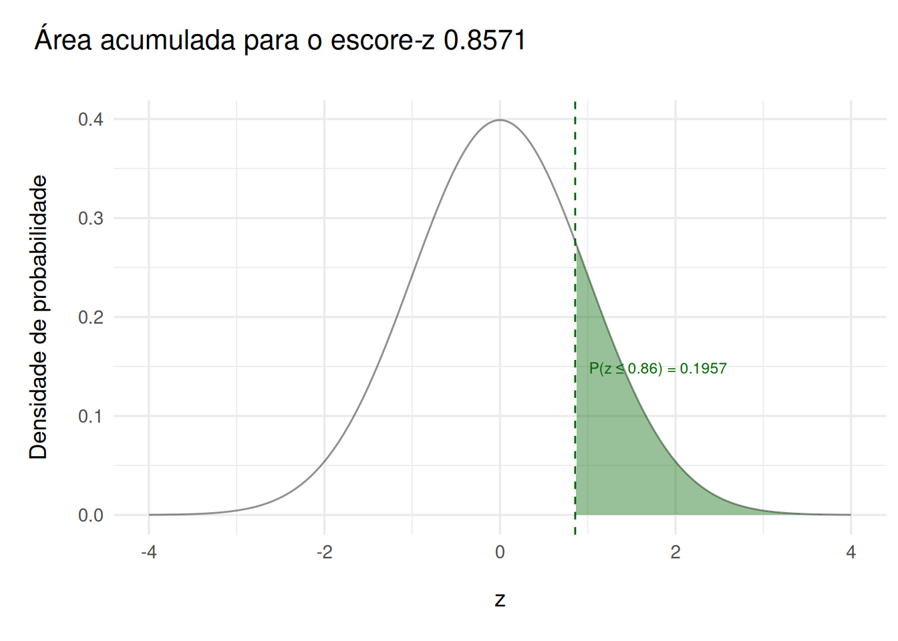
Questão D
Interpretação: A probabilidade de que um veículo aleatório ultrapasse a velocidade máxima de 70 milhas por hora é de aproximadamente \(7.33\%\).
Exercício 8
\[ \mu = 45 \] \[ \sigma = 12 \] \[ S = P(33 ≤ x ≤ 60) \]
e8 <- list(
mu = 45,
sigma = 12,
x1 = 33,
x2 = 60
)Questão A
draft(
name = "Permanência",
mu = e8$mu,
sigma = e8$sigma,
x_min = e8$mu - e8$sigma * 3.5,
x_max = e8$mu + e8$sigma * 3.5,
x_step = ceiling(e8$sigma / 2),
)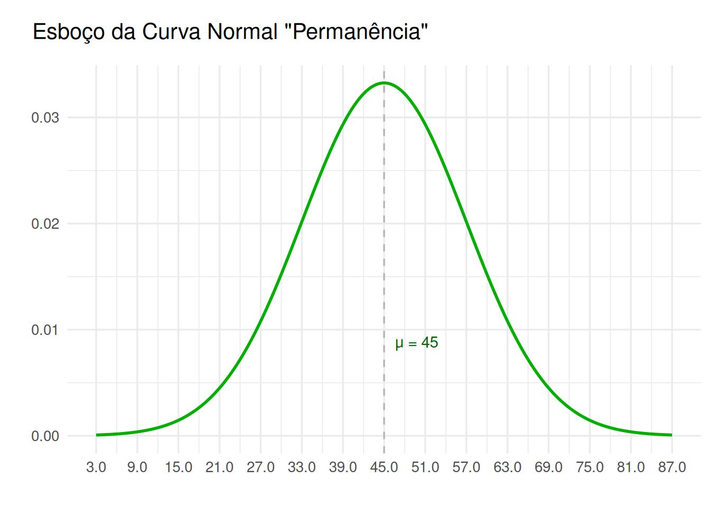
Questão B
z1 <- (e8$x1 - e8$mu) / e8$sigma
z1[1] -1z2 <- (e8$x2 - e8$mu) / e8$sigma
z2[1] 1.25Questão C
p <- abs(pnorm(z2) - pnorm(z1))
p |> ppercent()\[P = 0.735695 \approx 73.57\%\]
z_plot(z2, opposite = z1)Questão D
Interpretação: A probabilidade \(p\) de que um consumidor fique na loja entre 33 e 60 minutos é de aproximadamente \(0.735695\), ou \(73.57\%\). Para 150 consumidores aleatórios, espera-se que aproximadamente \(150 \cdot p = 111\) consumidores permaneceriam na loja entre 33 e 60 minutos.
Exercício 9
Não há informação suficiente no enunciado para obter a probabilidade de que este evento ocorra.
Exercício 10
Questão 10.1
A função qnorm pode fornecer um escore-z correspondente a uma dada probabilidade.
z <- qnorm(0.9616)
z[1] 1.769563Questão 10.2
Seja \(\alpha\) o valor restante, de \(0.05\), podemos obter o escore-z da diferença entre 1 e \(\alpha \over 2\):
alpha <- 0.05
z95 <- qnorm(1 - alpha/2)
z95[1] 1.959964Questão 10.2 A
pnorm(z95)[1] 0.975A área acumulada é de 0.975.
Questão 10.2 B
qnorm(pnorm(z95))[1] 1.959964A área corresponde a 1.959964 na tabela padrão.
Questão 10.2 C
O escore-z correspondente é qnorm(1 - alpha/2) , \(1.959964\).
Exercício 11
Questões A a C
Podemos obter cada percentil pela porcentagem ainda através da função qnorm.
p10 <- qnorm(0.1)
p20 <- qnorm(0.2)
p99 <- qnorm(0.99)
p10[1] -1.281552p20[1] -0.8416212p99[1] 2.326348Temos, portanto:
\[ P_{10} = -1.2815516 \] \[ P_{20} = -0.8416212 \] \[ P_{99} = 2.3263479 \]
Exercício 12
\[ \mu = 52 \] \[ \sigma = 15 \]
Questão A
e12 <- list(
mu = 52,
sigma = 15,
x1 = NULL,
x2 = NULL,
x2 = NULL,
z1 = -2.33,
z2 = 3.1,
z3 = 0.58
)Código
draft(
name = "Pesos",
mu = e12$mu,
sigma = e12$sigma,
x_min = e12$mu - e12$sigma * 3.5,
x_max = e12$mu + e12$sigma * 3.5,
x_step = ceiling(e12$sigma / 2),
)Questão B
Podemos inverter a fórmula para obter um escore-z e teremos:
\[ x = \mu + \sigma \cdot z \]
Portanto, para cada \(z_n\) em \(\{ -2.33, 3.1, 0.58 \}\), podemos obter um \(x_n\):
e12$x1 <- e12$mu + e12$sigma * e12$z1
e12$x1[1] 17.05e12$x2 <- e12$mu + e12$sigma * e12$z2
e12$x2[1] 98.5e12$x3 <- e12$mu + e12$sigma * e12$z3
e12$x3[1] 60.7Questão C
Os pesos correspondentes são:
\[ z_1 = -2.33 \rightarrow x_1 = 17.05 \] \[ z_2 = 3.1 \rightarrow x_2 = 98.5 \] \[ z_3 = 0.58 \rightarrow x_3 = 60.7 \]
Exercício 13
\[ \mu = 129 \] \[ \sigma = 5.18 \]
Questão A
e13 <- list(
mu = 129,
sigma = 5.18,
x = NULL,
z = NULL
)Código
draft(
name = "Frenagem",
mu = e13$mu,
sigma = e13$sigma,
x_min = e13$mu - e13$sigma * 3.5,
x_max = e13$mu + e13$sigma * 3.5,
x_step = ceiling(e13$sigma),
)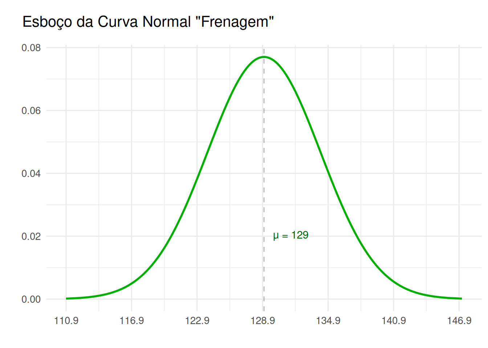
Questão B
Podemos encontrar o escore-z para \(0.01\) também com a função qnorm:
e13$z <- qnorm(0.01)
e13$z[1] -2.326348z_plot(e13$z)Questão C
Mais uma vez, podemos usar:
\[ x = \mu + \sigma \cdot z \]
Teremos:
\[ x = 129 + 5.18 \cdot -2.3263479 \]
e13$x <- e13$mu + e13$sigma * e13$z
e13$x[1] 116.9495Questão D
Interpretação: A maior distância de frenagem que carro um aleatório poderia ter e ainda estar no grupo dos 1% mais baixos é de aproximadamente 116.95 pés.
Exercício 14
e14 <- list(
mu = 11.2,
sigma = 2.1,
p = 0.1,
x = NULL,
z = NULL
)Questão A
\[ \mu = 11.2 \] \[ \sigma = 2.1 \]
Código
draft(
name = "Tempo de Trabalho",
mu = e14$mu,
sigma = e14$sigma,
x_min = e14$mu - e14$sigma * 3.5,
x_max = e14$mu + e14$sigma * 3.5,
x_step = ceiling(e14$sigma / 2),
)Questão B
A função qnorm novamente pode nos ajudar a encontrar o escore-z para \(0.1\):
e14$z <- qnorm(e14$p)
e14$z[1] -1.281552z_plot(e14$z)Questão C
Novamente, pela fórmula:
\[ x = \mu + \sigma \cdot z \]
Teremos:
\[ x = 11.2 + 2.1 \cdot -1.2815516 \]
e14$x <- e14$mu + e14$sigma * e14$z
e14$x[1] 8.508742Questão D
Interpretação: O tempo máximo que um funcionário pode ter trabalhado na empresa e ainda assim ser demitido é de aproximadamente 8 anos e 6 meses.
Exercício 15
Código
e15 <- list(
mu = 47,
sigma = 9,
n = 64,
s = NULL
)\[ \mu = 47 = \overline{x} \] \[ \sigma = 9 \] \[ n = 64 \]
Para o desvio padrão amostral, temos:
e15$s <- e15$sigma / sqrt(e15$n)\[ s = 1.125 \]
\[ \because \; n \ge 30 \; \therefore \; \overline{X} \sim N(47, 1.125^2) \]
Código
draft(
name = "Contas de Telefone (Amostral)",
mu = e15$mu,
sigma = e15$s,
x_min = e15$mu - e15$s * 3.5,
x_max = e15$mu + e15$s * 3.5,
x_step = ceiling(e15$s / 2),
)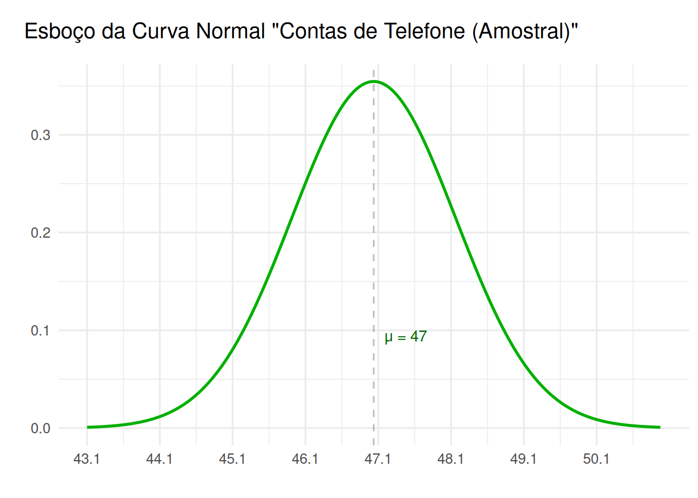
Exercício 16
Código
e16 <- list(
mu = 3.5,
sigma = 0.2,
n = 16,
s = NULL
)\[ \mu = 3.5 = \overline{x} \] \[ \sigma = 0.2 \] \[ n = 16 \]
Quanto ao erro padrão da distribuição amostral (desvio padrão amostral):
e16$s <- e16$sigma / sqrt(e16$n)\[ s = 0.05 \]
A amostra não é grande o suficiente, mas a população é normalmente distribuída. Logo, podemos usar a distribuição normal:
Código
draft(
name = "Diâmetros (Amostral)",
mu = e16$mu,
sigma = e16$s,
x_min = e16$mu - e16$s * 3.5,
x_max = e16$mu + e16$s * 3.5,
x_step = 0.05,
)Exercício 17
Código
e17 <- list(
mu = 25,
sigma = 1.5,
n = 100,
x1 = 24.7,
x2 = 25.5,
s = NULL
)Nota: O valor da amostra repete-se no enunciado, como 50 e 100. Foi presumido o segundo valor, 100, por sua compatibilidade com a pergunta.
Questão A
\[ \mu = 25 = \overline{x} \] \[ \sigma = 1.5 \] \[ n = 100 \]
Desvio padrão amostral:
e17$s <- e17$sigma / sqrt(e17$n)\[ s = 0.15 \]
\[ \because \; n \ge 30 \; \therefore \; \overline{X} \sim N(25, 0.15^2) \]
Código
draft(
name = "Tempo Dirigindo (Amostral)",
mu = e17$mu,
sigma = e17$s,
x_min = e17$mu - e17$s * 3.5,
x_max = e17$mu + e17$s * 3.5,
x_step = e17$s,
)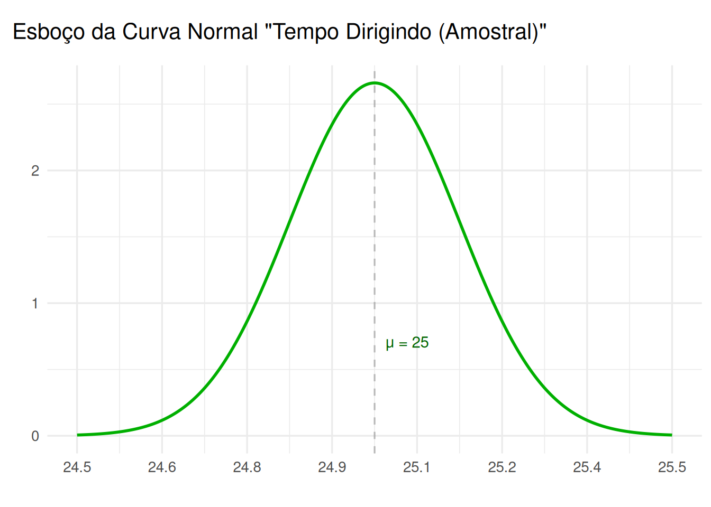
Questão B e C
Ainda precisamos determinar \(P(24.7 \lt x \lt 25.5)\).
Podemos obter \(P\) através de:
\[ P = P(25.5) - P(24.7) \]
Podemos usar pnorm novamente para expressar o mesmo em R:
(pnorm(e17$x2, mean = e17$mu, sd = e17$s) -
pnorm(e17$x1, mean = e17$mu, sd = e17$s)) |>
ppercent()\[P = 0.976821 \approx 97.68\%\]
Questão D
Interpretação: A probabilidade de que o tempo médio que \(100\) motoristas aleatórios passem entre \(24.7\) e \(25.5\) minutos dirigindo é de aproximadamente \(97.68\%\).
Exercício 18
Código
e18 <- list(
mu = 176800,
sigma = 50000,
n = 12,
x = 160000,
z = NULL,
s = NULL
)Questão A
\[ \mu = 1.768\times 10^{5} = \overline{x} \] \[ \sigma = 5\times 10^{4} \] \[ n = 12 \]
Desvio padrão amostral:
e18$s <- e18$sigma / sqrt(e18$n)\[ s = 1.4433757\times 10^{4} \]
Código
draft(
name = "Residências (Amostral)",
mu = e18$mu,
sigma = e18$s,
x_min = e18$mu - e18$s * 3.5,
x_max = e18$mu + e18$s * 3.5,
x_step = e18$s * 2,
)Questão B
e18$z <- (e18$x - e18$mu) / e18$sz_plot(e18$z, right = TRUE)Questão C
pnorm(e18$z, lower.tail = FALSE) |> ppercent()\[P = 0.877775 \approx 87.78\%\]
Questão D
Interpretação: Há uma probabilidade de aproximadamente \(87.78\%\) que o preço de vendas médio seja maior que US$ 160 000.
Exercício 19
Código
e19 <- list(
mu = 190,
sigma = 48,
n = 10,
x = 200,
z = NULL,
z_barra = NULL,
s = NULL
)\[ \mu = 190 = \overline{x} \] \[ \sigma = 48 \] \[ n = 10 \]
Desvio padrão amostral:
e19$s <- e19$sigma / sqrt(e19$n)\[ s = 15.1789328 \]
Código
draft(
name = "Monitores (Amostral)",
mu = e19$mu,
sigma = e19$s,
x_min = e19$mu - e19$s * 3.5,
x_max = e19$mu + e19$s * 3.5,
x_step = ceiling(e19$s / 2),
)e19$z <- (e19$x - e19$mu) / e19$sigma
e19$z_barra <- (e19$x - e19$mu) / e19$sQuestão B
pnorm(e19$z) |> ppercent()\[P = 0.582516 \approx 58.25\%\]
pnorm(e19$z_barra) |> ppercent()\[P = 0.744990 \approx 74.50\%\]
z_plot(e19$z)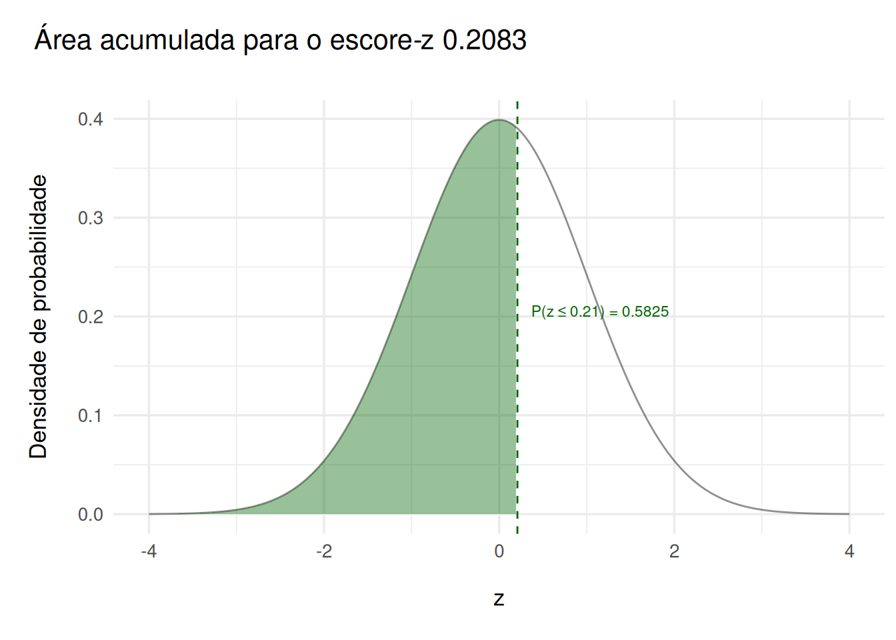
z_plot(e19$z_barra)Questão C
A amostra apresenta uma probabilidade maior. Isto é esperado, já que ela restringe a quantidade de casos extremos.
Exercício 20
Código
e20 <- list(
n = 100,
p = 0.34,
q = NULL,
np = NULL,
nq = NULL
)Questão A
e20$q <- 1 - e20$p\[ n = 100 \] \[ p = 0.34 \] \[ q = 0.66 \]
Questão B
e20$np <- e20$n * e20$p
e20$nq <- e20$n * e20$q\[ np = 34 \] \[ nq = 66 \]
Questão C
Podemos usar uma distribuição normal para aproximar, pois \(np \ge 5 \land nq \ge 5\).
Questão D
mu_b <- e20$np
sigma_b <- sqrt(e20$n * e20$p * e20$q)\[ \mu = 34 \] \[ \sigma = 4.7371 \]
Exercício 21
Código
e21 <- list(
n = 100,
p = 0.34,
q = NULL,
np = NULL,
nq = NULL,
mu = NULL,
sigma = NULL,
z = NULL,
ps = NULL,
a = NULL
)e21$q <- 1 - e21$p
e21$np <- e21$n * e21$p
e21$nq <- e21$n * e21$q\[ n = 100 \] \[ p = 0.34 \] \[ q = 0.66 \] \[ np = 34 \] \[ nq = 66 \]
Questão A
Novamente podemos usar uma distribuição normal, dado que \(np \ge 5 \land nq \ge 5\).
Questão B
e21$mu <- e21$np
e21$sigma <- sqrt(e21$n * e21$p * e21$q)\[ \mu = 34 \] \[ \sigma = 4.7371 \]
Questão C
Para corrigir \(P(x > 30)\), usaremos \(x \ge 30.5\).
e21$a <- 30.5Questão D
e21$z <- (e21$a - e21$mu) / e21$sigma
e21$ps <- pnorm(e21$z, lower.tail = FALSE)\[ z = -0.7388506 \] \[ P(X > 30) \approx P(Z > z) = 0.77 \]
z_plot(e21$z)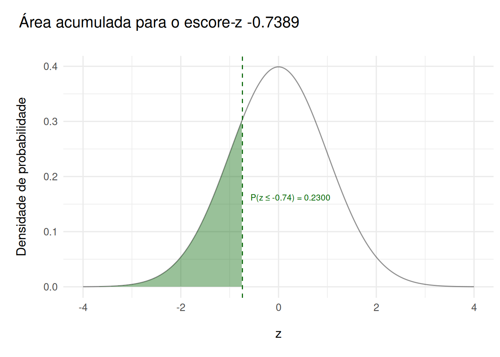
Código
x_vector <- seq(e21$mu - 4*e21$sigma, e21$mu + 4*e21$sigma, length.out = 400)
pairs <- tibble(x = x_vector, y = dnorm(
x_vector,
mean = e21$mu,
sd = e21$sigma
)
)
ggplot(pairs, aes(x, y)) +
geom_line(color = "darkgreen") +
geom_area(data = subset(pairs, x >= e21$a),
aes(x, y),
fill = "darkgreen", alpha = 0.4) +
geom_vline(xintercept = e21$a, linetype = "dashed") +
labs(
title = paste(
"Aproximação Normal para Binomial, n =", e21$n, "p =", e21$p
),
subtitle = "Em destaque, P(X > 30) com correção de continuidade",
x = "X",
y = "Densidade de probabilidade"
) +
theme_minimal(base_size = 13) +
theme(
plot.title = element_text(margin = margin(l = -45, t = 10, b = 5)),
plot.subtitle = element_text(margin = margin(l = -45, t = 5, b = 25)),
axis.title.y = element_text(
margin = margin(t = 0, r = 15, b = 0, l = 10, unit = "pt")
),
axis.title.x = element_text(
margin = margin(t = 15, r = 0, b = 0, l = 0, unit = "pt")
)
)Exercício 22
Código
e22 <- list(
n = 100,
p = 0.58,
q = NULL,
k = 100,
np = NULL,
nq = NULL,
mu = NULL,
sigma = NULL,
z = NULL,
ps = NULL,
a = NULL
)e22$q <- 1 - e22$p
e22$np <- e22$n * e22$p
e22$nq <- e22$n * e22$q\[ n = 100 \] \[ p = 0.58 \] \[ q = 0.42 \] \[ np = 58 \] \[ nq = 42 \]
Questão A
Mais uma vez podemos usar uma distribuição normal, dado que \(np \ge 5 \land nq \ge 5\).
Questão B
e22$mu <- e22$np
e22$sigma <- sqrt(e22$n * e22$p * e22$q)\[ \mu = 58 \] \[ \sigma = 4.9356 \]
Exercício 23
Código
e23 <- list(
n = 75,
p = 0.32,
q = NULL,
x = 15,
np = NULL,
nq = NULL,
mu = NULL,
sigma = NULL,
xs = NULL,
xs = NULL,
zs = NULL,
zi = NULL,
prob = NULL
)e23$q <- 1 - e23$p
e23$np <- e23$n * e23$p
e23$nq <- e23$n * e23$q\[ n = 75 \] \[ p = 0.32 \] \[ q = 0.68 \] \[ np = 24 \] \[ nq = 51 \]
Questão A
Ainda podemos usar uma distribuição normal, dado que \(np \ge 5 \land nq \ge 5\).
Questão B
e23$mu <- e23$np
e23$sigma <- sqrt(e23$n * e23$p * e23$q)\[ \mu = 24 \] \[ \sigma = 4.0398 \]
Questão C
e23$xi <- e23$x - 0.5
e23$xs <- e23$x + 0.5
e23$zi <- (e23$xi - e23$mu) / e23$sigma
e23$zs <- (e23$xs - e23$mu) / e23$sigma\[ x_i = 14.5 \] \[ x_s = 15.5 \] \[ z_i = -2.3516004 \] \[ z_s = -2.1040635 \]
Questão D
Para aproximar \(P(X = 15)\) para a distribuição normal:
pnorm(e23$zs) - pnorm(e23$zi) |> ppercent()\[P = 0.009346 \approx 0.93\%\]numeric(0)
z_plot(e23$zs, opposite = e23$zi)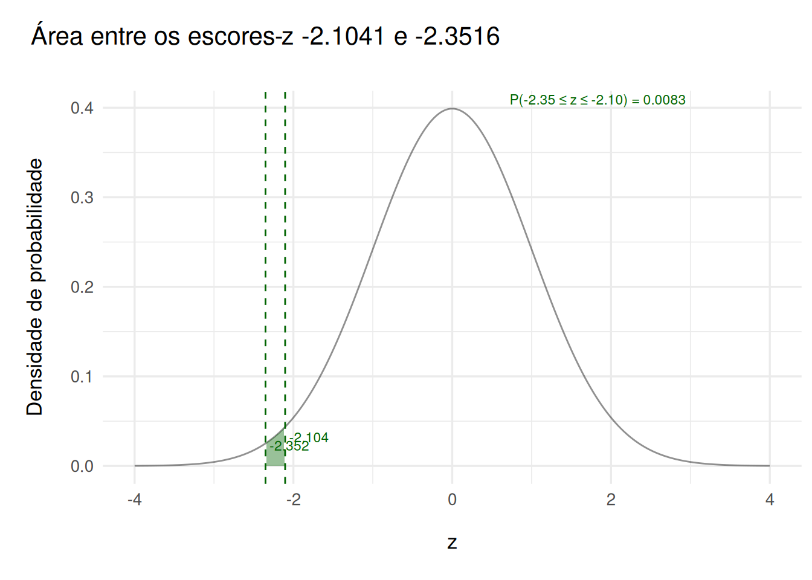
Exercício 24
O problema apresentado neste exercício é mais simples por poder ser reduzido a um vetor tal que:
hours <- c(
26, 25, 32, 31, 28, 28,
28, 22, 28, 25, 21, 40,
32, 22, 25, 22, 26, 24,
46, 20, 35, 22, 32, 48,
32, 36, 38, 32, 22, 19
)Questões A e B
Com isso, podemos obter a média amostral, que corresponde também à média populacional:
x_bar <- mean(hours)
x_bar[1] 28.9Exercício 25
Questão A
Usando o mesmo vetor, teremos:
n <- length(hours) # tamanho da amostra
sigma <- 7.9 # desvio populacional
alpha <- 0.05 # 95% de confiança
z_c <- qnorm(1 - alpha/2) # z-críticoQuestão B
Podemos obter a margem de erro por \(z_c \cdot \sigma / \sqrt{n}\):
E = z_c * sigma / sqrt(n)Questão C
\[ n = 30 \] \[ \sigma = 7.9 \] \[ \alpha = 0.05 \] \[ z_c = 1.959964 \] \[ E = 2.8269267 \]
Interpretação: Com 95% de confiança, a média de horas semanais está no intervalo \((26.31; 31.95)\).
Exercício 26
n <- length(hours)
s <- sd(hours)
alpha <- 0.05
f <- n - 1 # degrees of freedom
t_c <- qt(1 - alpha/2, f)Questão A
x_bar <- mean(hours)
E <- t_c * s / sqrt(n)\[ \overline{x} = 28.9 \] \[ E = 2.7480781 \]
Questão B
li <- x_bar - E
ls <- x_bar + E\[ l_i = 26.1519219 \] \[ l_s = 31.6480781 \]
Questão C
Interpretação: Com 95% de confiança, a média populacional de horas semanais está no intervalo \((26.15; 31.65)\).
Exercício 27
Novamente, podemos usar apenas um vetor para os dados:
hours <- c(
30, 26, 33, 26, 26, 33, 31, 31, 21, 37,
27, 20, 34, 35, 30, 24, 38, 34, 39, 31,
22, 30, 23, 23, 31, 44, 31, 33, 33, 26,
27, 28, 25, 35, 23, 32, 29, 31, 25, 27
)
sigma <- 7.9
E <- 2
alpha <- 0.05
z_c <- qnorm(1 - alpha / 2)\[ \sigma = 7.9 \] \[ E = 2 \] \[ \alpha = 0.05 \] \[ z_c = 1.959964 \]
Dadas estas informações, podemos obter:
\[ n = (z_c \cdot \sigma / E)^2 \]
n <- ceiling((z_c * sigma / E)^2)
n[1] 60Interpretação: Pelo menos 60 funcionários devem ser incluídos na amostra para ter 95% de confiança de que a diferença máxima entre a média amostral e a média populacional seja de 2 horas.
Exercício 28
Questão A
Dada uma amostra de \(n = 22\), podemos obter o grau de liberdade \(f = n - 1\):
n <- 22
f <- n - 1Questão B
c <- 0.90Questão C
Novamente, usamos a função qt para obter o valor \(t_c\).
alpha <- 1 - c
t_c <- qt(1 - alpha / 2, f)Questão D
O valor crítico \(t_c\) para um nível de confiança de 90% com uma amostra de 22 é 1.7207429.
Exercício 29
Podemos definir as seguintes variáveis a partir do enunciado:
n <- 16
mu <- 162
s <- 10
f <- n - 1
se <- s / sqrt(n)Com elas, podemos então construir duas listas, cada uma contendo os limites superiores e inferiores para os intervalos de confiança de 90% e 99%:
## 90%
alpha90 <- 0.10
t90 <- qt(1 - alpha90 / 2, f)
e90 <- t90 * se
ci90 <- list(i = x_bar - e90, s = x_bar + e90)
## 99%
alpha99 <- 0.01
t99 <- qt(1 - alpha99 / 2, f)
e99 <- t99 * se
ci99 <- list(i = x_bar - e99, s = x_bar + e99)Os valores obtidos mostram:
- Intervalo de confiança de 90%
- Limite inferior 24.5174
- Limite superior 33.2826
- Intervalo de confiança de 99%
- Limite inferior 21.5332
- Limite superior 36.2668
Exercício 30
Novamente, podemos definir as seguintes variáveis a partir do enunciado:
n <- 36
mu <- 9.75
s <- 2.39
f <- n - 1
se <- s / sqrt(n)## 90%
t90 <- qt(0.95, f)
e90 <- t90 * se
ci90 <- list(i = mu - e90, s = x_bar + e90)
## 95%
t95 <- qt(0.975, f)
e95 <- t95 * se
ci95 <- list(i = mu - e95, s = x_bar + e95)Temos, portanto, os intervalos de confiança:
ci90$i
[1] 9.076987
$s
[1] 29.57301ci95$i
[1] 8.94134
$s
[1] 29.70866Questão A
- Intervalo de confiança de 90%
- \(t_c = 1.6896\)
- \(E = 0.673\)
- Intervalo de confiança de 95%
- \(t_c = 2.0301\)
- \(E = 0.8087\)
Questão B
- Intervalo de confiança de 90%
- Limite inferior 9.077
- Limite superior 29.573
- Intervalo de confiança de 95%
- Limite inferior 8.9413
- Limite superior 29.7087
Questão C
Podemos comparar as larguras usando uma subtração simples:
- Intervalo de confiança de 90%
- Largura: 20.496
- Intervalo de confiança de 95%
- Largura: 20.7673
Exercício 31
Como o desvio padrão da população é desconhecido e temos uma amostra pequena, devemos usar a distribuição \(t\) com um índice de liberdade de \(n - 1\).
Mais uma vez, vamos primeiro designar algumas variáveis com os valores do enunciado:
n <- 18
x_bar <- 64
s <- 2.5
f <- n - 1Dado o intervalo de confiança de \(90\%\), temos \(\alpha = 0.1\):
alpha <- 0.10
t_c <- qt(1 - alpha / 2, f)
se <- s / sqrt(n)E com isso podemos obter a margem de erro:
me <- t_c * seNosso intervalo de confiança estará, portanto, entre:
c_i <- x_bar - me
c_s <- x_bar + meOu seja, entre 62.9749 e 65.0251.
Exercício 32
Questão A
Pelo enunciado, temos:
x <- 123
n <- 2462Questão B
Podemos obter \(\hat{p}\) com uma proporção simples de \(x \over n\).
p_h <- x / n\[ \hat{p} = 0.0499594\]
Exercício 33
Questão A
x <- 123
n <- 2462
p_h <- x / n
q_h <- 1 - p_h\[ \hat{p} = 0.0499594 \] \[ \hat{q} = 0.9500406 \]
Questão B
np <- n * p_h
nq <- n * q_hA distribuição amostral pode ser aproximada por uma distribuição normal pois \(np = 123 \gt 5 \land nq = 2339 \gt 5\).
Questão C
z_c <- qnorm(0.95)
e <- z_c * sqrt(p_h * q_h / n)\[ z_c = 1.6448536 \] \[ E = 0.0072221 \]
Questão D
l_i <- p_h - e
l_s <- p_h + eQuestão E
O intervalo de confiança populacional é aproximadamente (0.0435; 0.0565).
Com 90% de confiança, entre 4.35% e 5.65% dos professores dos Estados Unidos responderiam “todas ou quase todas”.
Exercício 34
Questão A
n <- 498
p_h <- 0.25
q_h <- 1 - p_h
p_h[1] 0.25q_h[1] 0.75\[ \hat{p} = 0.25 \] \[ \hat{q} = 0.75 \]
Questão B
np <- n * p_h
nq <- n * q_hTamém podemos aproximar pela distribuição normal dado que \(np = 124.5 \gt 5 \land nq = 373.5 \gt 5\).
Questão C
z_c <- qnorm(0.995)
e <- z_c * sqrt(p_h * q_h / n)\[ z_c = 2.5758293 \] \[ E = 0.0499808 \]
Questão D
l_i <- p_h - e
l_s <- p_h + e\[ l_i = 0.2000192 \] \[ l_s = 0.2999808 \]
Questão E
Com 99% de confiança, a proporção de adultos americanos que consideram pessoas acima de 65 anos os motoristas mais perigosos está entre aproximadamente 20% e 30%.
Exercício 35
Questão A
p_h1 <- 0.5
q_h1 <- 1 - p_h1
p_h2 <- 0.31
q_h2 <- 1 - p_h2
z_c <- qnorm(0.95)
e <- 0.02Questão B
A partir de,
\[ n = ({z_c}^2 \cdot \hat{p} \cdot \hat{q}) \over E^2 \]
Temos:
n1 <- (z_c^2 * p_h1 * q_h1) / e^2
n2 <- (z_c^2 * p_h2 * q_h2) / e^2\[ n_1 = 1690.9646588 \] \[ n_2 = 1446.7893621 \]
Questão C
Dado o domínio da aplicação, precisamos dos valores arredondados:
n1 <- ceiling(n1)
n2 <- ceiling(n2)Sem estimativa prévia, precisa-se de 1691 pessoas Com \(\hat{p} = 0.31\), precisa-se de 1447 pessoas.
Exercício 36
- Encontre os valores críticos χ2R e χ2L para um intervalo de confiança de 90% quando o tamanho da amostra é 30.
Questão A
n <- 30
f <- n - 1
conf <- 0.90
alpha <- 1 - conf
f[1] 29alpha[1] 0.1Questão B
As áreas são \(0.05\) à direita e \(0.05\) à esquerda.
Questão C
Podemos usar a distribuição chi quadrado. Na linguagem R, a função qchisq oferece o que precisamos:
c_r <- qchisq(1 - alpha / 2, f)
c_l <- qchisq(alpha / 2, f)\[ c_r = 42.5569678 \] \[ c_l = 17.7083662 \]
Questão D
Com 90% de confiança, χ^2 está entre aproximadamente 17.71 e aproximadamente 42.56.
Exercício 37
Questão A
n <- 30
f <- n - 1
s <- 1.20
conf1 <- 0.90; alpha1 <- 1 - conf1
conf2 <- 0.95; alpha2 <- 1 - conf2
c_r1 <- qchisq(1 - alpha1 / 2, f)
c_l1 <- qchisq(alpha1 / 2, f)
c_r2 <- qchisq(1 - alpha2 / 2, f)
c_l2 <- qchisq(alpha2 / 2, f)Questão B
var_est <- (f * s^2)
# 90%
v1_i <- var_est / c_r1
v1_s <- var_est / c_l1
# 95%
v2_i <- var_est / c_r2
v2_s <- var_est / c_l2Questão C
sd1_i <- sqrt(v1_i)
sd1_s <- sqrt(v1_s)
sd2_i <- sqrt(v2_i)
sd2_s <- sqrt(v2_s)Questão D
- Intervalo de confiança de 90%
- Para a variância: 0.98 a 2.36
- Para o desvio padrão: 0.99 a 1.54
- Intervalo de confiança de 95%
- Para a variância: 0.91 a 2.6
- Para o desvio padrão: 0.96 a 1.61
Exercício 38
Questão A
- \(\mu \ne 74\)
- \(\sigma^2 \le 2.7\)
- \(p \gt 0.24\)
Questão B
- \(\mu = 74\)
- \(\sigma^2 \gt 2.7\)
- \(p \ge 0.24\)
Questão C
- \(H_0\) e \(H_a\) para média
- \(H_0: \mu = 74\)
- \(H_a: \mu \ne 74\) (afirmação)
- \(H_0\) e \(H_a\) para variância
- \(H_0: \sigma^2 \le 2.7\) (afirmação)
- \(H_a: \sigma^2 \gt 2.7\)
- \(H_0\) e \(H_a\) para proporção
- \(H_0: p \le 0.24\)
- \(H_a: p \gt 0.24\) (afirmação)
Exercício 39
Questão A
- \(H_0: p \le 0.01\)
- \(H_a: p \gt 0.01\)
Questão B
- Erro tipo I: rejeitar \(H_0\) quando \(p \le 0.01\), concluindo que a taxa é \(\gt 1\%\) quando na realidade é \(\le 1\%\)
- Erro tipo II: não rejeitar \(H_0\) quando \(p \gt 0.01\), concluindo que a taxa é \(\le 1\%\) quando na realidade é \(\gt 1\%\)
Questão C
O erro tipo II é mais sério.
Exercício 40
Questão A
- Analista de consumo
- \(H_{0}\colon \mu = 74\)
- \(H_{a}\colon \mu \neq 74\)
- Corretor de imóveis
- \(H_{0}\colon p = 0.24\)
- \(H_{a}\colon p > 0.24\)
Questão B
- Teste bilateral: \(\mu \ne 74\)
z0 <- 2.1
p_b <- 2 * (1 - pnorm(abs(z0)))
p_b[1] 0.03572884- Teste unilateral à direita: \(p \gt 0.24\)
z0 <- 1.5
p_u <- 1 - pnorm(z0)
p_u[1] 0.0668072Questão C
z_plot(qnorm(1 - p_u), right = TRUE)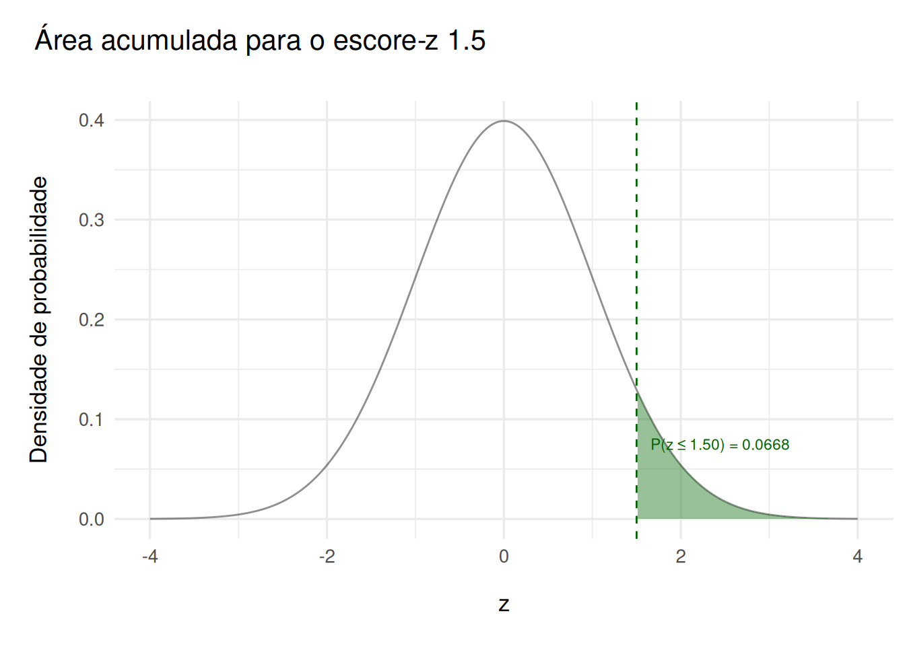
Código
z_crit <- qnorm(1 - p_b / 2)
pairs <- tibble(x = seq(-4, 4, length.out = 1000))
pairs$y <- dnorm(pairs$x)
ggplot(pairs, aes(x, y)) +
geom_line() +
geom_area(
data = subset(pairs, x <= -z_crit), aes(x, y),
fill = "darkgreen",
alpha = 0.5
) +
geom_area(
data = subset(pairs, x >= z_crit), aes(x, y),
fill = "darkgreen",
alpha = 0.5
) +
geom_vline(xintercept = c(-z_crit, z_crit), linetype = "dashed") +
labs(
title = "Teste Bilateral",
x = "z",
y = "Densidade de probabilidade"
) +
theme_minimal(base_size = 13) +
theme(
plot.title = element_text(margin = margin(l = -45, t = 10, b = 5)),
plot.subtitle = element_text(margin = margin(l = -45, t = 5, b = 25)),
axis.title.y = element_text(
margin = margin(t = 0, r = 15, b = 0, l = 10, unit = "pt")
),
axis.title.x = element_text(
margin = margin(t = 15, r = 0, b = 0, l = 0, unit = "pt")
)
)Exercício 41
Interpretação: rejeitar \(H_0\)
- Proporção de estudantes: 61%
- Há evidência suficiente para afirmar que a proporção de estudantes em atividades extracurriculares não é 0.61
- \(\text{Rejeitar } H_0 \colon p = 0.61 \Longrightarrow p \neq 0.61\)
- Tempo médio de troca de óleo é menor que 15 min
- Há evidência suficiente para concluir que o tempo médio é menor que 15 minutos
- \(\text{Rejeitar } H_0 \colon \mu = 15 \Longrightarrow \mu \lt 15\)
Interpretação: não rejeitar \(H_0\)
- Proporção de estudantes é 61%
- Não há evidência suficiente para afirmar que a proporção difere de 0.61
- Tempo médio de troca de óleo é menor que 15 min
- Não há evidência suficiente para afirmar que o tempo médio é menor que 15 minutos
Exercício 42
Questão A
Se rejeitarmos \(H_0\), a interpretação seria de que há evidência suficiente para concluir que a proporção de proprietários que acham suas casas muito pequenas é maior que 24%.
Questão B
Se não rejeitarmos \(H_0\), a interpretação seria de que não há evidência suficiente para concluir que a proporção de proprietários que acham suas casas muito pequenas é maior que 24%.
Exercício 43
Questão A
z <- -1.71
p <- pnorm(z)
p[1] 0.04363294Questão B
Este valor é o mesmo obtido na questão A, \(0.0436329\).
Questão C
Interpretação: Uma vez que \(p = 0.0436329 < \alpha = 0.1\) , devemos rejeitar \(H_0\).
Exercício 44
Questão A
z <- 1.64
p <- pnorm(z)
p[1] 0.9494974Questão B
p_2 <- 2 * (1 - pnorm(z))
p_2[1] 0.1010052Questão C
\[ p = 0.9494974 > \alpha = 0.10 \Longrightarrow \text{Não rejeitar } H_{0}. \]
Exercício 45
Questão A
- \(H_{0}\colon \mu = 35\)
- \(H_{a}\colon \mu > 35\)
Questão B
- \(\alpha = 0.05\)
Questão C
x_bar <- 36
mu <- 35
sigma <- 4
n <- 100
z <- (x_bar - mu) / (sigma / sqrt(n))
z[1] 2.5Questão D
p <- 1 - pnorm(z)
p[1] 0.006209665Questão E
Dado que \(p = 0.0062097 < \alpha = 0.05\), devemos rejeitar \(H_0\).
Questão F
Interpretação: Há evidência suficiente para concluir que a velocidade média dos veículos ultrapassa 35 milhas por hora.
Exercício 46
Questão A
- Afirmação: “o tempo médio para recuperar o custo é 3 anos”.
- \(H_0: \mu = 3\)
- \(H_1: \mu \neq 3\)
Questão B
alpha <- 0.01Questão C
x_bar <- 3.3
mu <- 3
sigma <- 0.5
n <- 25
z <- (x_bar - mu) / (sigma / sqrt(n))
z[1] 3Questão D
p <- 2 * (1 - pnorm(abs(z)))
p[1] 0.002699796Questão E
Como \(p \approx 0.0027 < \alpha = 0.01\), devemos rejeitar \(H_0\).
Questão F
Interpretação: Há evidências suficientes de que o tempo médio para recuperar o custo difere de 3 anos. No caso da presente estatística, ele parece ser maior.
Exercício 47
Questão A
alpha <- 0.10z_plot(qnorm(alpha))
Questão B
z <- -1.28
a <- pnorm(z)
a[1] 0.1002726Questão C
z_a <- qnorm(a)
z_a[1] -1.28z_plot(z_a)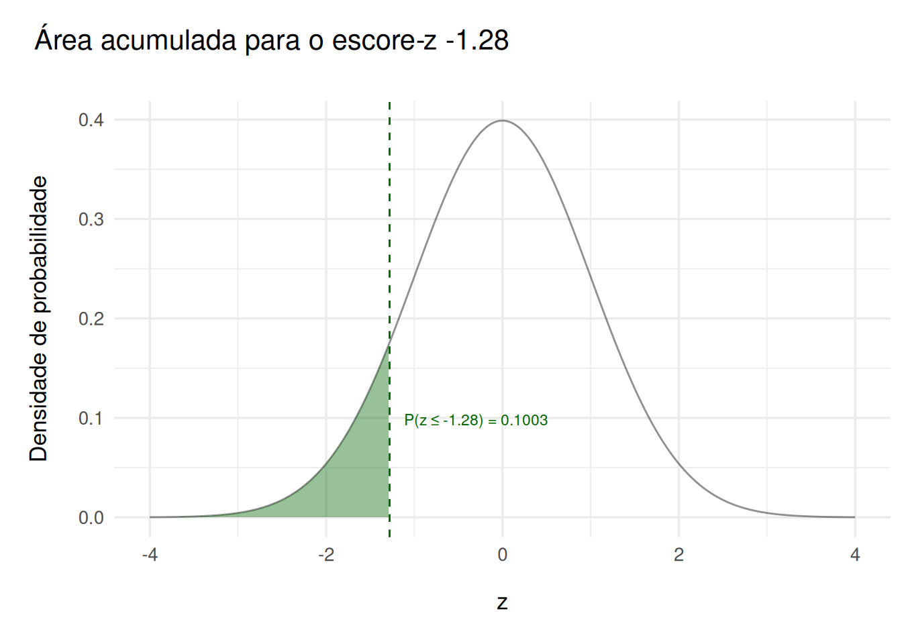
Questão D
A zona de rejeição está à esquerda de \(z = -1.28\), ou seja, devemos rejeitar se \(z \lt -1.28\).
Exercício 48
Questão A
Código
alpha <- 0.08
z_i <- qnorm(alpha / 2)
z_s <- qnorm(1 - alpha / 2)
df <- tibble(x = seq(-4, 4, length.out = 400))
df$y <- dnorm(df$x)
ggplot(df, aes(x = x, y = y)) +
geom_line(linewidth = 1) +
geom_ribbon(data = subset(df, x <= z_i),
aes(ymin = 0, ymax = y),
fill = "darkgreen", alpha = 0.5) +
geom_ribbon(data = subset(df, x >= z_s),
aes(ymin = 0, ymax = y),
fill = "darkgreen", alpha = 0.5) +
geom_vline(xintercept = c(z_i, z_s),
linetype = "dashed", color = "darkgreen") +
annotate("text", x = z_i, y = max(df$y) * 0.6,
label = paste0("z_i = ", round(z_i, 3)),
hjust = 1.1, color = "darkgreen") +
annotate("text", x = z_s, y = max(df$y) * 0.6,
label = paste0("z_s = ", round(z_s, 3)),
hjust = -0.1, color = "darkgreen") +
labs(
title = "Curva Normal Padrão: α/2 em cada cauda",
x = "z",
y = "f(z)"
) +
theme_minimal(base_size = 13) +
theme(
plot.title = element_text(margin = margin(l = -45, t = 10, b = 5)),
plot.subtitle = element_text(margin = margin(l = -45, t = 5, b = 25)),
axis.title.y = element_text(
margin = margin(t = 0, r = 15, b = 0, l = 10, unit = "pt")
),
axis.title.x = element_text(
margin = margin(t = 15, r = 0, b = 0, l = 0, unit = "pt")
)
)Questão B
alpha <- 0.08
a_i <- pnorm(qnorm(alpha/2))
a_s <- pnorm(qnorm(1 - alpha/2))\[ a_i = 0.04 \] \[ a_s = 0.96 \]
Questão C
z_i <- qnorm(0.04)
z_s <- qnorm(0.96)
z_i # -1.750686[1] -1.750686z_s # 1.750686[1] 1.750686Questão D
Rejeitar \(H_0\) se \(z \lt -1.7506861\) ou \(z \gt 1.7506861\).
Exercício 49
- Hipóteses
- \(H_0: \mu = 68000\)
- \(H_1: \mu \lt 68000\)
x_bar <- 66900
mu <- 68000
sigma <- 5500
n <- 20
z <- (x_bar - mu) / (sigma / sqrt(n))
p <- pnorm(z)\[ z = -0.8944272 \] \[ p = 0.1855467 \]
\(0.1855467 \gt \alpha = 0.05\), logo, não devemos rejeitar \(H_0\).
Interpretação: Não há evidência suficiente de que o salário médio seja menor que \(68 000\).
Exercício 50
Questão A
alpha1 <- 0.1
alpha2 <- 0.01Questão B
z_1 <- qnorm(1 - alpha1 / 2)
z_2 <- qnorm(1 - alpha2 / 2)\[ z_1 = 1.6448536 \] \[ z_2 = 2.5758293 \]
As regiões de rejeição são \(z \lt -z_0\) ou \(z > z_0\).
Questão C
Código
library(ggplot2)
alpha <- 0.10
z0 <- qnorm(1 - alpha / 2)
x <- seq(-4, 4, length = 400)
y <- dnorm(x)
ggplot(data.frame(x, y), aes(x, y)) +
geom_line() +
geom_ribbon(data = subset(data.frame(x, y), x <= -z0),
aes(ymin = 0, ymax = y), fill = "darkgreen", alpha = 0.5) +
geom_ribbon(data = subset(data.frame(x, y), x >= z0),
aes(ymin = 0, ymax = y), fill = "darkgreen", alpha = 0.5) +
geom_vline(
xintercept = c(-z0, z0),
linetype = "dashed",
color = "darkgreen"
) +
geom_vline(xintercept = z, colour = "darkgreen") +
labs(title = "Teste Z bilateral",
subtitle = paste("α = 0.1, z = ", round(z, 3))) +
theme_minimal(base_size = 13) +
theme(
plot.title = element_text(margin = margin(l = -45, t = 10, b = 5)),
plot.subtitle = element_text(margin = margin(l = -45, t = 5, b = 25)),
axis.title.y = element_text(
margin = margin(t = 0, r = 15, b = 0, l = 10, unit = "pt")
),
axis.title.x = element_text(
margin = margin(t = 15, r = 0, b = 0, l = 0, unit = "pt")
)
)Questão D
Interpretação: Com \(\alpha = 0.1\), há evidência suficiente para rejeitar a afirmação de que o custo médio é \(13960\) (o custo médio parece menor). Com \(\alpha = 0.01\), não há evidência suficiente para rejeitar a afirmação.
Exercício 51
Questão A
\[gl = n - 1 = 9 - 1 = 8\]
Questão B
alpha <- 0.10
f <- 8
t0 <- qt(1 - alpha, f)\[ t_0 = 1.3968153 \]
Exercício 52
Questão A
\[gl = n - 1 = 16 - 1 = 15\]
Questão B
alpha <- 0.05
f <- 15
t_i <- qt(alpha / 2, f)
t_s <- qt(1 - alpha / 2, f)\[ t_i = -2.1314495 \] \[ t_s = 2.1314495 \]
Exercício 53
Questão A
\[ H_0:\ \mu = 1200 \] \[ H_a:\ \mu < 1200 \]
Questão B
alpha <- 0.1
n <- 7
f <- n - 1Questão C
t <- qt(alpha, f)\[ t = -1.4397557 \]
Questão D
x_bar <- 1125
mu <- 1200
s <- 55
n <- 7
t_stat <- (x_bar - mu) / (s / sqrt(n))
p <- pt(t_stat, f)\[ t_{stat} = -3.6078427 \] \[ p = 0.00563 \]
Código
pairs <- tibble(x = seq(-4, 4, length.out = 400))
pairs$y <- dt(pairs$x, df = f)
ggplot(pairs, aes(x, y)) +
geom_line() +
geom_ribbon(data = subset(pairs, x <= t0),
aes(ymin = 0, ymax = y),
fill = "darkgreen", alpha = 0.5) +
geom_vline(xintercept = c(t0, t_stat),
linetype = "dashed",
color = c("black", "darkgreen")) +
annotate("text", x = t0, y = max(pairs$y) * 0.9,
label = paste0("t0=", round(t0, 3)),
hjust = 1.1, color = "black") +
annotate("text", x = t_stat, y = max(pairs$y) * 0.7,
label = paste0("t=", round(t_stat, 3)),
hjust = -0.1, color = "darkgreen") +
labs(title = "Distribuição t (df=6)",
subtitle = "Área à esquerda de t0 = região de rejeição",
x = "t", y = "f(t)") +
theme_minimal(base_size = 13) +
theme(
plot.title = element_text(margin = margin(l = -45, t = 10, b = 5)),
plot.subtitle = element_text(margin = margin(l = -45, t = 5, b = 25)),
axis.title.y = element_text(
margin = margin(t = 0, r = 15, b = 0, l = 10, unit = "pt")
),
axis.title.x = element_text(
margin = margin(t = 15, r = 0, b = 0, l = 0, unit = "pt")
)
)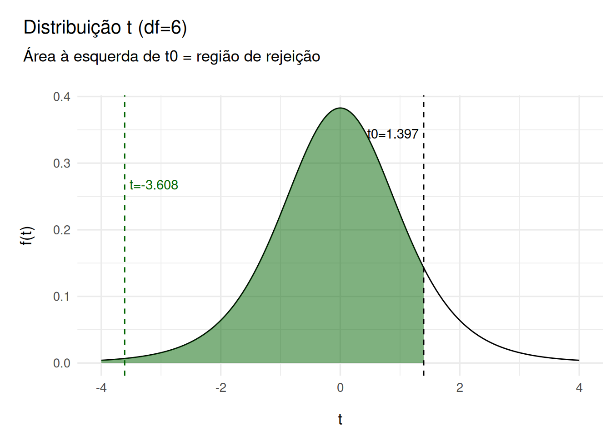
Questão E
\[ p \approx 0.044 < \alpha = 0.1 \Longrightarrow \text{ Rejeitar } H_0\]
Questão F
Interpretação: Há evidência de que o custo médio do seguro é menor que 1200.
Exercício 54
Questão A
pH
- \(H_0: \mu_{pH} = 6.8\)
- \(H_a: \mu_{pH} \neq 6.8\)
Condutividade
- \(H_0: \mu_{cond} = 1890\)
- \(H_a: \mu_{cond} \neq 1890\)
Questão B
- pH: \(\alpha = 0.05,\quad df = 39 - 1 = 38\)
- Condutividade: \(\alpha = 0.01,\quad df = 39 - 1 = 38\)
Questão C
df <- 38
t_crit05 <- qt(1 - 0.05 / 2, df)
t_crit01 <- qt(1 - 0.01 / 2, df)\[ t_crit05 = 2.0243942 \] \[ t_crit01 = 2.7115576 \]
Questão D
# pH
xbar1 <- 6.7
mu01 <- 6.8
s1 <- 0.35
n1 <- 39
df <- n1 - 1
t1 <- (xbar1 - mu01) / (s1 / sqrt(n1))
p1 <- 2 * pt(-abs(t1), df)
# condutividade
xbar2 <- 2350
mu02 <- 1890
s2 <- 900
n2 <- 39
t2 <- (xbar2 - mu02) / (s2 / sqrt(n2))
p2 <- 2 * pt(-abs(t2), df)\[ t_1 = -1.7842851 \] \[ p_1 = 0.0823639 \]
\[ t_2 = 3.1918879 \] \[ p_2 = 0.0028355 \]
Código
pairs <- tibble(x = seq(-4, 4, length.out = 400))
pairs$y <- dt(pairs$x, df = df)
ggplot(pairs, aes(x, y)) +
geom_line() +
geom_vline(xintercept = c(-t_crit05, t_crit05, t1),
linetype = "dashed",
color = c("red", "red", "darkgreen")
) +
annotate("text", x = t1, y = max(pairs$y) * 0.7,
label = paste0("t1=", round(t1, 3)),
color = "darkgreen"
) +
labs(title = "Teste t bilateral para pH",
subtitle = paste("t1 =", round(t1, 3),
" | região de rejeição |t| > 2.0244"),
x = "t"
) +
theme_minimal(base_size = 13) +
theme(
plot.title = element_text(margin = margin(l = -45, t = 10, b = 5)),
plot.subtitle = element_text(margin = margin(l = -45, t = 5, b = 25)),
axis.title.y = element_text(
margin = margin(t = 0, r = 15, b = 0, l = 10, unit = "pt")
),
axis.title.x = element_text(
margin = margin(t = 15, r = 0, b = 0, l = 0, unit = "pt")
)
)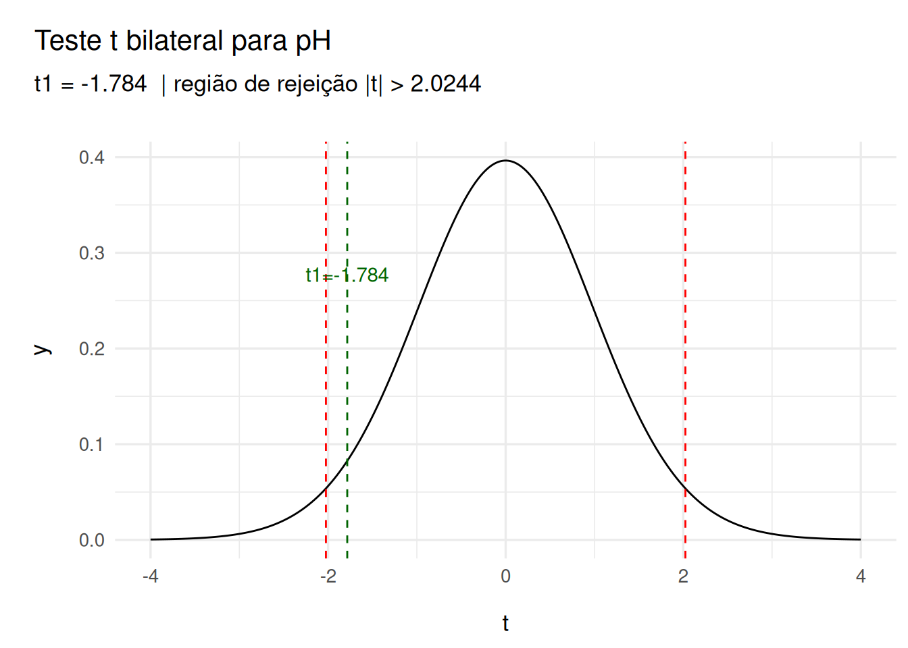
Questão E
- pH (\(\alpha = 0.05\))
- \(p_1 \approx 0.081 > 0.05 \Longrightarrow\) Não rejeitar \(H_0\)
- Condutividade (\(\alpha = 0.01\))
- \(p_2 \approx 0.0029 > 0.01 \Longrightarrow\) Rejeitar \(H_0\)
Questão F
- Interpretação:
- pH: Não há evidência suficiente para rejeitar a afirmação de nível médio 6.8
- Condutividade: Há evidência suficiente para rejeitar a afirmação de média 1890 mg/L